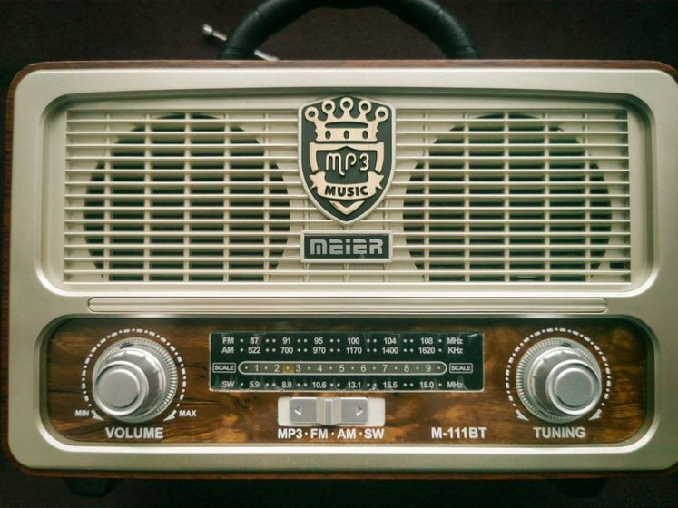

The Card That Took Four Months to Arrive

The log entry is dated November 3, timestamped 05:52 UTC, station identified by call sign on 9.560 MHz, reception graded fair — enough voice to follow cadence, not enough to be certain of every word. It is the kind of catch a listener notes and then debates reporting, because a fair signal makes for a thin reception report. I reported it anyway, the way the practice goes: date, time, frequency, a rough signal grade, and a return address written out by hand, since the form on file for that station still asked for a postal one rather than an inbox. The letter went out the following week. The card that answered it arrived on March 7, four months and four days later, postmarked from a sorting facility three time zones east of the transmitter site, in an envelope gone soft at the corners from however many hands and mailbags carried it along the way.
The Catch, Logged in November
The antenna behind that catch is nothing remarkable — a length of wire described in more detail over in Twelve Metres of Wire, and What It Actually Hears, strung low enough that it favors evening skip on the lower shortwave bands. 9.560 MHz that night carried two stations close enough in frequency to smear into each other, and the one that eventually answered the report was the weaker of the two. The log entry says as much: signal grade fair, readability three of five, a note that the second station bled through during pauses. None of that discouraged a report. A weak, honestly graded catch is still a catch, and the worst outcome of reporting one is silence — which is a fine outcome, since it costs nothing but a stamp.
Why a Card at All
A QSL card is not proof of listening skill and it isn't a trophy in any competitive sense. It is a station confirming, in its own words, that a report matches something it actually transmitted at that date and time. Some stations reply within days over email now. Others still mail a printed card because the practice predates email by decades and changing it has never been a budget priority for a station running on volunteer hours. Both are legitimate confirmations. The card that took four months belongs to the second kind — a small station with an all-volunteer QSL desk, no dedicated staff, and a mailing schedule that depends on whoever has time that month to walk a stack of envelopes to the post office.
The Report That Went Out
A useful reception report is specific rather than impressive. This one listed the date and time in UTC to the minute, the frequency to the nearest hundred hertz, a signal and readability grade on the standard scale, and two sentences describing program content — enough for the station to cross-reference its own transmission log without needing to trust a stranger's memory. It did not claim more clarity than was actually heard. Overstating a weak catch is the fastest way to get no reply at all, since a station checking its own log against an inflated report will usually just move on to the next envelope.
A report that goes out honest is a report a station can actually check. A report that goes out flattering is one it can only doubt.
The Four Months in Between
Nothing about that gap is unusual once it's set next to other stations' patterns. Small broadcasters with a volunteer QSL desk often mail replies in batches rather than one at a time, which means a report can sit in a drawer for weeks before anyone gets around to writing the card, let alone posting it. International mail between certain postal systems has no tracking and no guaranteed transit window, so a card can also sit in transit for a stretch that has nothing to do with the station at all. The same discipline of dated, cross-referenced notes described in A Logbook That Lies Less is what made the wait bearable here — the original entry was specific enough that four months later, matching the card against it took under a minute.
What Finally Arrived, and What It Confirmed
The card itself is a plain printed rectangle, ink a little faded, with the transmission details filled in by hand: frequency, date, and a signal report that roughly matched what had been sent, adjusted slightly in the station's own favor, which is common and not worth reading into. The postmark date on the envelope was four days earlier than the arrival date logged when it was pulled from the mailbox — a gap that belongs to the postal system, not the station.
Checking the card against the log
The date printed on a card is usually the station's local date, not UTC. Convert before comparing it to a UTC-timestamped log entry, or a genuine match can look like a one-day discrepancy for no reason at all. This one lined up once the conversion was done.
Filing It Away
Turnaround varies enough, station to station and route to route, that no single figure is worth treating as a rule. The table below reflects only what this log has recorded so far — a small, informal sample, not a survey.
| Route | Span logged here | Notes |
|---|---|---|
| Domestic, same country | 3–6 weeks | No customs step; often a metered stamp rather than a hand cancel. |
| Regional, neighboring country | 5–10 weeks | One border crossing; batch mailing can add weeks before it even ships. |
| Intercontinental, established desk | 6–14 weeks | Larger stations tend to reply in scheduled batches, monthly or quarterly. |
| Intercontinental, volunteer-run | 10–18+ weeks | This entry's card falls here — no tracking, no fixed reply schedule. |
| Amateur contact, direct card | 4–9 weeks | Bypasses the bureau system, which usually shortens the wait. |
Whatever the eventual span, the same small set of fields is worth writing down the moment a card is pulled from the mailbox, while the details are still easy to check against the original report:
- The arrival date — the day it was actually pulled from the mailbox, not the postmark date.
- The postmark date and location, when legible.
- A direct comparison against the original report: date, time, frequency, signal grade.
- Any discrepancy, and a note on the likely reason — a time zone conversion, most often.
- Where the physical card gets filed, so the log entry can be checked again later without a search.
None of this shortens the wait on the next report sitting out there somewhere between a listener's mailbox and a volunteer's desk. It just means that whenever the next card does turn up — in three weeks or in eight months — the entry it's answering will still be specific enough to check.